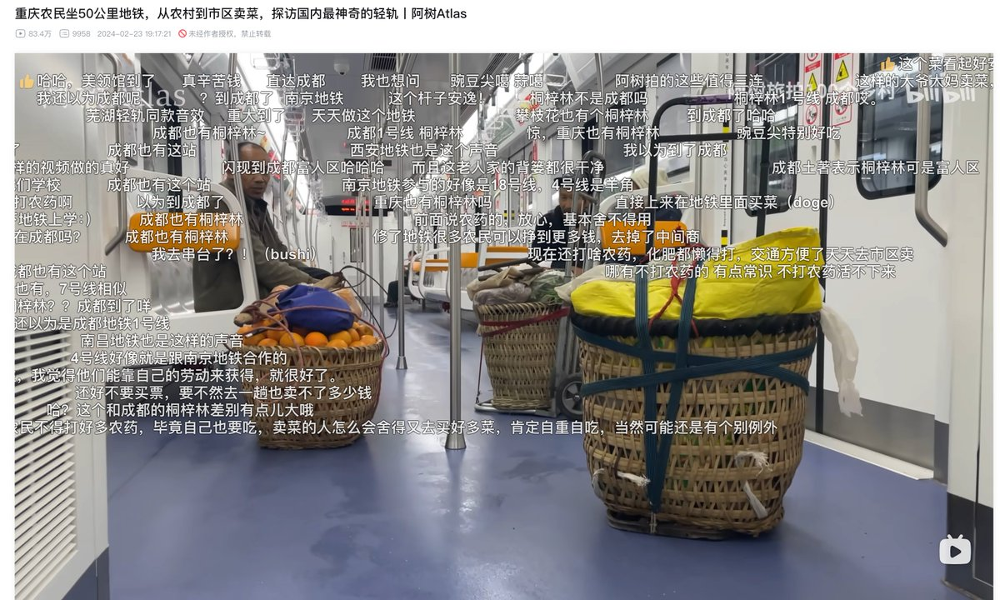

确实，纳税人的钱应该被用在最需要的地方，实现效益最大化，重庆跟其他城市80为交通20为卖地发展不同，重庆50为交通，50为卖地发展，但实际上现在经济下行卖地的财政收入没了，卖地发展搞不成了，失败的规划无法向纳税人交代了，然后他们就搞了个背篓专线让全国人民看看自己怎么浪费钱的，，


去年重庆和全国都在猛夸背篓专线，说“既容得下公文包，也容得下菜篮子”，
一群爷爷奶奶天天背蔬菜坐地铁进城里卖菜，底下一群网友感动，“人民万岁”、“好像我的爷爷奶奶”，
已知这条地铁的成本是每公里7亿人民币，这笔债务要全体重庆人和全国转移支付的纳税人来承担，
请问，你支持这条背篓专线吗？ https://t.co/7f7O4AhTPq
一群爷爷奶奶天天背蔬菜坐地铁进城里卖菜，底下一群网友感动，“人民万岁”、“好像我的爷爷奶奶”，
已知这条地铁的成本是每公里7亿人民币，这笔债务要全体重庆人和全国转移支付的纳税人来承担，
请问，你支持这条背篓专线吗？ https://t.co/7f7O4AhTPq